Element Mass Matrix¶
We have
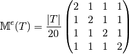
Then with  definition (see Section New Optimized assembly algorithm (OptV2 version)) , we obtain
definition (see Section New Optimized assembly algorithm (OptV2 version)) , we obtain
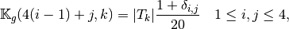
So the vectorized algorithm for 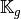 computation is simple and given in Algorithm 27.
Note
- pyOptFEM.FEM3D.elemMatrixVec.ElemMassMat3DP1Vec(nme, volumes)[source]
Computes all the element Mass matrices 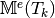 for 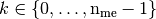
Parameters: volumes ( numpy array of floats) – volumes of all the mesh elements. Returns: a one dimensional numpy array of size 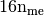
Element Stiffness Matrix¶
We have 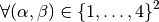
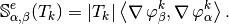
Using vectorized algorithm function given in Algorithm 26, we obtain the vectorized algorithm 28 for computation for the Stiffness matrix in 3d.
Note
- pyOptFEM.FEM3D.elemMatrixVec.ElemStiffMat3DP1Vec(nme, q, me, volumes)[source]
Computes all the element stiffness matrices 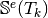 for
Parameters: - nme (int) – number of mesh elements,
- q (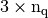 numpy array of floats) – mesh vertices,
- me (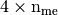 numpy array of integers) – mesh connectivity,
- areas ( numpy array of floats) – areas of all the mesh elements.
Returns: a one dimensional numpy array of size 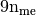
Element Elastic Stiffness Matrix¶
We define on the tetrahedron 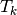 the local alternate basis 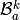 by
![\begin{array}{c}
\mathcal{B}_a^k=\{\BasisFuncTwoD_1^k,\hdots,\BasisFuncTwoD_{12}^k\}\\=\\
\left\{\tiny
\begin{pmatrix} \BasisFunc_1^k \\ 0 \\ 0\end{pmatrix},
\begin{pmatrix} 0 \\ \BasisFunc_1^k \\0 \end{pmatrix},
\begin{pmatrix} 0 \\ 0 \\ \BasisFunc_1^k \end{pmatrix},
\begin{pmatrix} \BasisFunc_2^k \\ 0 \\ 0\end{pmatrix},
\begin{pmatrix} 0 \\ \BasisFunc_2^k \\0 \end{pmatrix},
\begin{pmatrix} 0 \\ 0 \\ \BasisFunc_2^k \end{pmatrix},
\begin{pmatrix} \BasisFunc_3^k \\ 0 \\ 0\end{pmatrix},
\begin{pmatrix} 0 \\ \BasisFunc_3^k \\0 \end{pmatrix},
\begin{pmatrix} 0 \\ 0 \\ \BasisFunc_3^k \end{pmatrix},
\begin{pmatrix} \BasisFunc_4^k \\ 0 \\ 0\end{pmatrix},
\begin{pmatrix} 0 \\ \BasisFunc_4^k \\0 \end{pmatrix},
\begin{pmatrix} 0 \\ 0 \\ \BasisFunc_4^k \end{pmatrix}
\right\}
\end{array}](_images/math/2060c318244a1a093ab4a7a603d13de6e186b4b9.png)
where 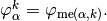 With notations of Presentation, we have 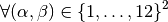
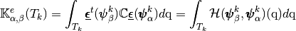
with, 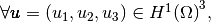 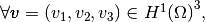 by
![\begin{array}{c}
\mathcal{H}(\vecb{u},\vecb{v})\\=\\
\tiny{
\DOT{\begin{pmatrix} \gamma & 0 &0\\ 0 & \mu &0\\ 0 & 0 &\mu\end{pmatrix}\GRAD u_1 }{\GRAD v_1}
+\DOT{\begin{pmatrix} 0 & \lambda & 0\\ \mu & 0 & 0 \\ 0 & 0 & 0 \end{pmatrix}\GRAD u_2 }{\GRAD v_1}
+\DOT{\begin{pmatrix} 0 & 0 & \lambda\\ 0 & 0 & 0 \\ \mu & 0 & 0 \end{pmatrix}\GRAD u_3 }{\GRAD v_1}
}\\
%&+&
\tiny{+
\DOT{\begin{pmatrix} 0 & \mu &0\\ \lambda & 0 &0\\ 0 & 0 &0\end{pmatrix}\GRAD u_1 }{\GRAD v_2}
+\DOT{\begin{pmatrix} \mu & 0 & 0\\ 0 & \gamma & 0 \\ 0 & 0 & \mu \end{pmatrix}\GRAD u_2 }{\GRAD v_2}
+\DOT{\begin{pmatrix} 0 & 0 & 0\\ 0 & 0 & \lambda \\ 0 & \mu & 0 \end{pmatrix}\GRAD u_3 }{\GRAD v_2}
}\\
%&+&
\tiny{+
\DOT{\begin{pmatrix} 0 & 0 &\mu\\ 0 & 0 &0\\ \lambda & 0 & 0\end{pmatrix}\GRAD u_1 }{\GRAD v_3}
+\DOT{\begin{pmatrix} 0 & 0 & 0\\ 0 & 0 & \mu \\ 0 & \lambda & 0 \end{pmatrix}\GRAD u_2 }{\GRAD v_3}
+\DOT{\begin{pmatrix} \mu & 0 & 0\\ 0 & \mu & 0 \\ 0 & 0 & \gamma \end{pmatrix}\GRAD u_3 }{\GRAD v_3}
}
\end{array}](_images/math/966dac90c9bb68859a3b173ab0ab2ef0b3d43379.png)
where
 and
and  are the Lame coefficients and 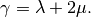
are the Lame coefficients and 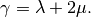For example, we can explicitly compute the first two terms in the first column of 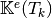 which are given by
![\begin{array}{lcl}
\StiffElasElem_{1,1}(T_k)&=&\int_{T_k} \mathcal{H}(\BasisFuncTwoD^k_{1},\BasisFuncTwoD^k_{1})(\q)d\q\\
&=&\int_{T_k} \mathcal{H}\left(
\tiny\begin{pmatrix}
\BasisFunc^k_{1}\\
0\\
0
\end{pmatrix},
\tiny\begin{pmatrix}
\BasisFunc^k_{1}\\
0\\ 0
\end{pmatrix}
\right)(\q)d\q\\
&=&|T_k|
\DOT{\tiny\begin{pmatrix} \gamma & 0 &0\\ 0 & \mu &0\\ 0 & 0 &\mu\end{pmatrix}\GRAD \BasisFunc^k_{1} }{\GRAD \BasisFunc^k_{1}}
=|T_k|\left(\gamma\DP{\BasisFunc^k_{1}}{x}\DP{\BasisFunc^k_{1}}{x}+\mu(\DP{\BasisFunc^k_{1}}{y}\DP{\BasisFunc^k_{1}}{y}+\DP{\BasisFunc^k_{1}}{z}\DP{\BasisFunc^k_{1}}{z}) \right).
\end{array}](_images/math/f31f782483fbaab8941ce8f3c00e6367807572bc.png)
and
![\begin{array}{lcl}
\StiffElasElem_{2,1}(T_k)&=&\int_{T_k} \mathcal{H}(\BasisFuncTwoD^k_{1},\BasisFuncTwoD^k_{2})(\q)d\q\\
&=&\int_{T_k} \mathcal{H}\left(
\tiny\begin{pmatrix}
\BasisFunc^k_{1}\\
0\\0
\end{pmatrix},
\begin{pmatrix}
0\\
\BasisFunc^k_{1}\\ 0
\end{pmatrix}
\right)(\q)d\q\\
&=&|T_k|
\DOT{\tiny\begin{pmatrix} 0 & \mu &0\\ \lambda & 0 &0\\ 0 & 0 &0\end{pmatrix}\GRAD \BasisFunc^k_{1} }{\GRAD \BasisFunc^k_{1}}
=|T_k|(\lambda+\mu)\DP{\BasisFunc^k_{1}}{x}\DP{\BasisFunc^k_{1}}{y}.
\end{array}](_images/math/3225a4c4059f6c6445664bcd509f69ab55badf13.png)
Using vectorized algorithm function given in Algorithm 26, we obtain the vectorized algorithm 29 for computation for the Elastic Stiffness matrix in 3d.
Note
- pyOptFEM.FEM3D.elemMatrixVec.ElemStiffElasMatBa3DP1Vec(nme, q, me, volumes, la, mu)[source]
Computes all the element elastic stiffness matrices
 for
in local alternate basis.
for
in local alternate basis.Parameters: Returns: a (144*nme,) numpy array of floats.
We define on the local block basis 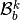 by
![\begin{array}{c}
\mathcal{B}_b^k=\{\BasisFuncTwoDB_1^k,\hdots,\BasisFuncTwoDB_{12}^k\} \\ = \\
\left\{\tiny
\begin{pmatrix} \BasisFunc_1^k \\ 0 \\ 0 \end{pmatrix},
\begin{pmatrix} \BasisFunc_2^k \\ 0 \\ 0 \end{pmatrix},
\begin{pmatrix} \BasisFunc_3^k \\ 0 \\ 0 \end{pmatrix},
\begin{pmatrix} \BasisFunc_4^k \\ 0 \\ 0 \end{pmatrix},
\begin{pmatrix} 0 \\ \BasisFunc_1^k \\ 0 \end{pmatrix},
\begin{pmatrix} 0 \\ \BasisFunc_2^k \\ 0 \end{pmatrix},
\begin{pmatrix} 0 \\ \BasisFunc_3^k \\ 0 \end{pmatrix},
\begin{pmatrix} 0 \\ \BasisFunc_4^k \\ 0 \end{pmatrix},
\begin{pmatrix} 0 \\ 0 \\ \BasisFunc_1^k \end{pmatrix},
\begin{pmatrix} 0 \\ 0 \\ \BasisFunc_2^k \end{pmatrix},
\begin{pmatrix} 0 \\ 0 \\ \BasisFunc_3^k \end{pmatrix},
\begin{pmatrix} 0 \\ 0 \\ \BasisFunc_4^k \end{pmatrix}
\right\}
\end{array}](_images/math/7c4bf83fbf2fdf41f5cb21583408a47f29c82237.png)
where
For example, using formula (?), we can explicitly compute the first two terms in the first column of which are given by
![\begin{array}{lcl}
\StiffElasElem_{1,1}(T_k)&=&\int_{T_k} \mathcal{H}(\BasisFuncTwoDB^k_{1},\BasisFuncTwoDB^k_{1})(\q)d\q\\
&=&\int_{T_k} \mathcal{H}\left(
\tiny\begin{pmatrix}
\BasisFunc^k_{1}\\
0\\0
\end{pmatrix},
\begin{pmatrix}
\BasisFunc^k_{1}\\
0\\0
\end{pmatrix}
\right)(\q)d\q\\
&=&|T_k|
\DOT{\tiny\begin{pmatrix} \gamma & 0 &0\\ 0 & \mu &0\\ 0 & 0 &\mu\end{pmatrix}\GRAD \BasisFunc^k_{1} }{\GRAD \BasisFunc^k_{1}}
=|T_k|\left(\gamma\DP{\BasisFunc^k_{1}}{x}\DP{\BasisFunc^k_{1}}{x}+\mu(\DP{\BasisFunc^k_{1}}{y}\DP{\BasisFunc^k_{1}}{y} +\DP{\BasisFunc^k_{1}}{z}\DP{\BasisFunc^k_{1}}{z})\right).
\end{array}](_images/math/c4aef18f1397200b418955ce636071bc976bd58e.png)
and
![\begin{array}{lcl}
\StiffElasElem_{2,1}(T_k)&=&\int_{T_k} \mathcal{H}(\BasisFuncTwoDB^k_{1},\BasisFuncTwoDB^k_{2})(\q)d\q\\
&=&\int_{T_k} \mathcal{H}\left(
\tiny \begin{pmatrix}
\BasisFunc^k_{1}\\
0\\ 0
\end{pmatrix},
\begin{pmatrix}
\BasisFunc^k_{2}\\
0\\ 0
\end{pmatrix}
\right)(\q)d\q\\
&=&|T_k|
\DOT{\tiny\begin{pmatrix} \gamma & 0 &0\\ 0 & \mu &0\\ 0 & 0 &\mu\end{pmatrix}\GRAD \BasisFunc^k_{1} }{\GRAD \BasisFunc^k_{2}}
=|T_k|\left(\gamma\DP{\BasisFunc^k_{1}}{x}\DP{\BasisFunc^k_{2}}{x}+\mu(\DP{\BasisFunc^k_{1}}{y}\DP{\BasisFunc^k_{2}}{y}+\DP{\BasisFunc^k_{1}}{z}\DP{\BasisFunc^k_{2}}{z}) \right).
\end{array}](_images/math/c7bc5b702294ebee564e5c3c2e19643d6cea022a.png)
Using vectorized algorithm function given in Algorithm 26, we obtain the vectorized algorithm 30 for computation for the Elastic Stiffness matrix in 3d.
Note
- pyOptFEM.FEM3D.elemMatrixVec.ElemStiffElasMatBb3DP1Vec(nme, q, me, volumes, L, M)[source]
Compute all the element elastic stiffness matrices,
for
in local block basis.Parameters: Returns: a (144*nme,) numpy array of floats.

{kind=link}
{kind=link}
{kind=link}
{kind=link}